Distributed Multi-Agent RL for Vehicle Platoons
Taking NeurComm from a single Python process to a real message-passing system, and then breaking the network on purpose
In short
We picked the ICLR 2020 paper "Multi-agent Reinforcement Learning for Networked System Control" by Chu, Chinchali and Katti. It proposes NeurComm, a way for agents in a network to learn what to tell their neighbours. We used the paper's car platoon task: 8 cars following a leader, where every car is its own learning agent.
Our project had two halves. First we tried to reproduce the paper's results. Then, since this is a distributed systems project, we turned the whole thing into a real distributed system: every car runs as its own MPI process and cars only know what their neighbours send them. Once that worked, we started breaking it: lost messages, late messages, crashed processes and finally a car that lies.
reproduced the paper. IA2C learns good controllers on some seeds, NeurComm never beat the simple baseline in our runs.
results on MPI and in plain Python, step by step, for all controllers. Distributed training also matches the original trainer.
until the platoon crashes when cars use only their own radar and send no messages. Communication is not optional here.
roads crash with 1 s old messages for the hand-tuned controller. A local radar fallback fixes all of them.
more data per second for NeurComm than IA2C, and NeurComm suffers most when messages arrive late.
in 180 runs with a lying car once cars check messages against their own radar. Without the check, one liar crashed every road.
- Platoon
- A line of cars driving close together behind a leader, like a road train.
- Gap (headway)
- Distance to the car in front. The target is 20 m at 15 m/s. Below 1 m counts as a crash.
- Reward
- A penalty score per 0.1 s step for gap errors, speed errors and harsh acceleration. It is always negative; closer to 0 is better.
- Seed
- A number that fixes the random parts (starting positions, training randomness). Different seeds = different roads or different training runs.
- V2V
- Vehicle-to-vehicle messages, i.e. cars talking to each other by radio.
- MPI rank
- One process in an MPI program. Rank 0 is our road, ranks 1 to 8 are the cars.
- Byzantine fault
- A node that keeps running and talking, but sends wrong information (on purpose or not). Harder to handle than a node that just stops.
BackgroundThe problem and the paper
In the paper's CACC task (cooperative adaptive cruise control), 8 cars follow a leading vehicle. Each car wants to keep a 20 m gap at 15 m/s, drive smoothly and never crash. In the catch-up scenario we used, car 1 starts too far behind the leader (36 m on our test road) and the whole platoon has to close up without the cars behind overreacting.
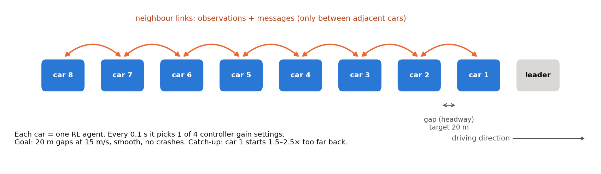
The learning part is simpler than it sounds. Every car uses the same "driver formula" (the optimal velocity model):
acceleration = α × (speed I should have for my gap − my speed) + β × (front car's speed − my speed)
The α part only needs the car's own radar. The β part needs the front car's speed, which a car cannot measure, so it has to come in a message. Every 0.1 s, each agent picks one of four knob settings for (α, β): (0, 0), (0.5, 0), (0, 0.5) or (0.5, 0.5). So the RL agents do not steer directly, they choose how to drive.
We compare four ways of choosing:
| Controller | How it picks the setting | What neighbours send it |
|---|---|---|
| Radar only | always (0.5, 0), reacts to its own gap only | nothing |
| Fixed | always (0.5, 0.5), hand-tuned | front car's speed (1 number) |
| IA2C | its own trained neural network | + neighbours' observations (5 numbers each) |
| NeurComm | its own part of a trained network that also reads neighbours' "thoughts" | + observation, last decision and LSTM hidden state (5 + 4 + 64 = 73 numbers) |
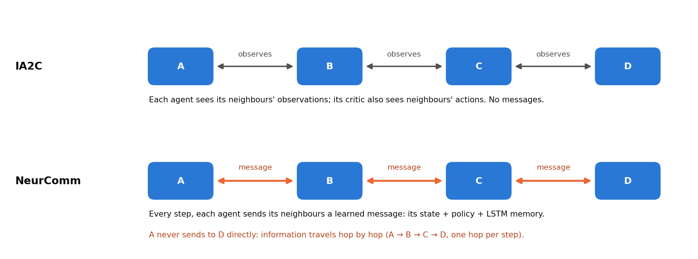
Step 1Reproducing the paper
We started from the authors' own PyTorch code (cts198859/deeprl_network), fixed what did not run on a current Mac, and trained IA2C and NeurComm on catch-up for 60,000 steps per run.
To score a trained model fairly we always do the same thing: take the version with the best validation score during training (mean of the last 5 test episodes), then run it with deterministic actions on 50 roads it has never seen (seeds 100000, 100010, ..., 100490) and average the reward per step. The hand-tuned fixed controller scores −72.7 on the same roads; that is the bar to beat.
| Method | Seed 12 | Seed 13 | Seed 14 | Mean |
|---|---|---|---|---|
| Fixed controller (no learning) | −72.7 | |||
| IA2C, 60k steps | −37.2 | −94.5 | −374.6 | −168.8 |
| NeurComm as released (one global reward) | −422.3 | −392.4 | −392.4 | −402.3 |
| NeurComm with spatial discount 0.9 | −176.8 | −94.3 | −392.4 | −221.1 |
| NeurComm, spatial discount 0.9, 250k steps | −176.8 | −94.3 | −392.4 | −221.1 |
Later we trained IA2C on three more seeds (15, 16, 17) and got −70.1, −431.9 and −34.2. So over 6 seeds IA2C beats the fixed controller 3 times out of 6 (median −82.3), and when it works it is really good: seed 12 is twice as good as the fixed controller.
What we tried for NeurComm
- Spatial discount. The released configs give every agent the same global reward (
coop_gamma = -1). The paper's method weights rewards of nearby cars more. Turning it on (0.9) helped a lot: −402 to −221. Seed 13 got close to the baseline (−94.3). - Training 4× longer (250k steps). It did not change anything. In all three seeds the best version was found before 60k steps (at 41k, 38k and 29k), so the final scores are exactly the same. The figure shows why: the typical score stays flat and the share of good episodes even goes down over time. Training is unstable, not too short.
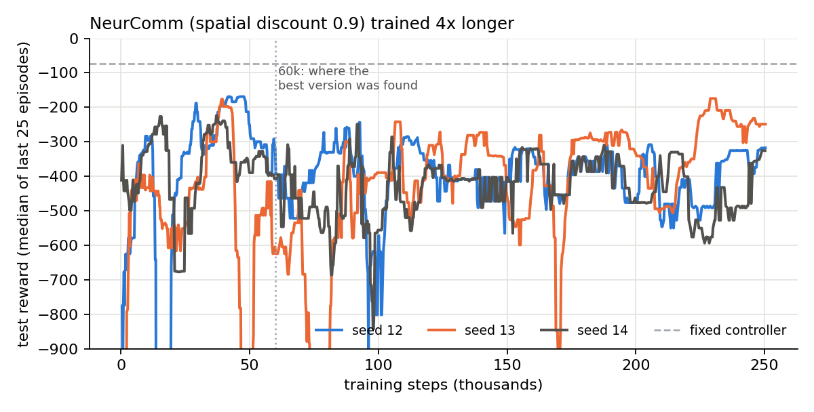
The setup works and IA2C learns good controllers on some seeds. NeurComm, the paper's main method, did not beat the hand-tuned controller in any of our runs. Our best guesses why: the paper's numbers come from the authors' older TensorFlow code and we use their PyTorch port; the released configs have the spatial discount turned off; and training is very sensitive to the seed (Step 5 shows just how sensitive). We did not keep tuning, because the rest of the project did not depend on NeurComm being the best controller, only on having trained models to run distributed.
Step 2Making it visible
Numbers in a table do not show what a platoon actually does, and Dr. Somani asked us to show it. So we built a browser simulator (Python standard library server, Server-Sent Events, HTML canvas). It can run the trained policies live or replay a recorded MPI run. Every V2V message is drawn as a dot moving between cars, so you can literally watch who talks to whom.
The final demo page has 9 sections, one situation each (normal driving, leader brakes, late messages, radar fallback, lost messages, crashed car, malicious car without defence, with radar check, with gossip). Picking a section shows all controllers side by side and Play plays only that section.
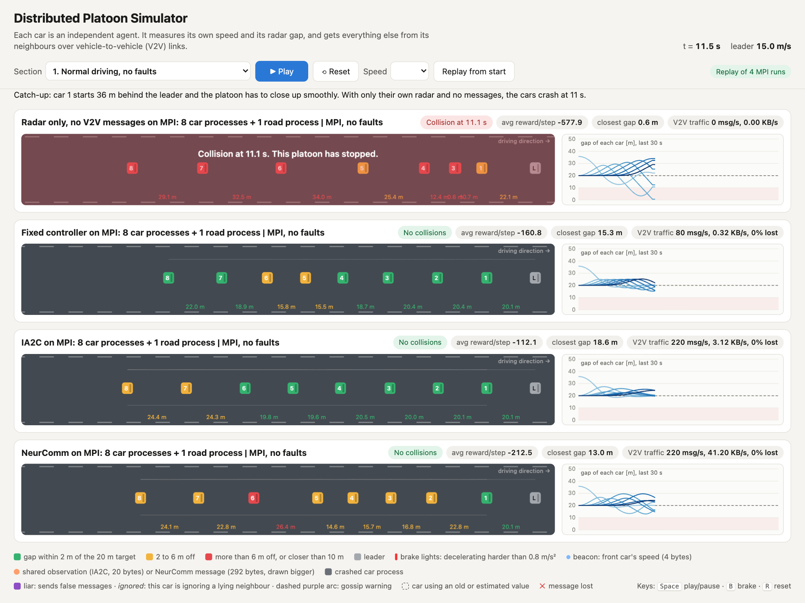
How to read the page: car colour shows the gap error (green within 2 m, amber 2 to 6 m, red more than 6 m off or closer than 10 m); a red bar at the back means braking hard; a dashed outline means the car is using an old or estimated value; a grey × car is a crashed process; purple is a lying car.
Step 3One MPI process per car
This is where the project becomes a distributed system. We wrote mpi/platoon_mpi.py with mpi4py on Open MPI 5. With 8 cars it runs as 9 separate processes:
- Rank 0, the road. It plays the physical world: it moves all cars, drives the leader and sends each car only its own sensor readings (speed, acceleration, radar gap). It is not a controller and never tells a car what to do.
- Ranks 1 to 8, the cars. Each loads only its own part of the trained policy and talks only to its neighbours with point-to-point messages (
isend,iprobe,recv).
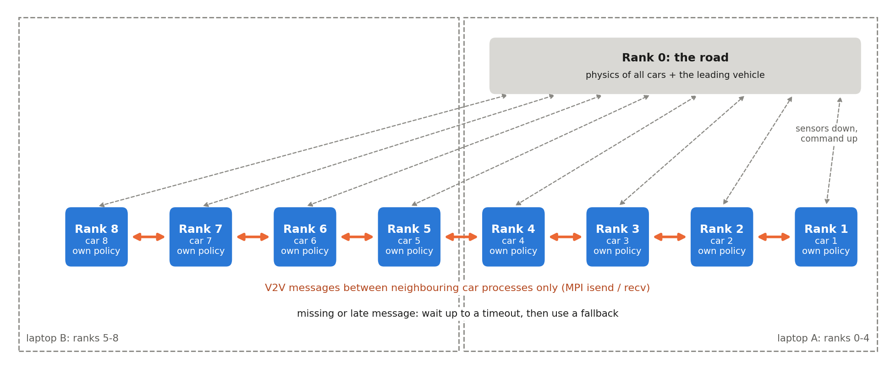
One 0.1 s step
- The road sends each car its own sensor readings.
- V2V round 1: each car sends its speed to the car behind. The leader's speed comes from the road.
- Each car waits (up to a timeout) for the front car's message. If it is missing, it uses a fallback.
- V2V round 2 (IA2C and NeurComm): each car sends its message to both neighbours. For NeurComm this is the real NeurComm message with the hidden state inside.
- Each car runs its own network, turns the chosen setting into an acceleration and sends it to the road.
- The road waits for every command (a car that does not answer in time is marked as crashed), moves all cars and logs the step.
NeurComm took the most care. In the authors' code it is one big network for all agents. We cut it up so each car process holds its own encoders, LSTM and action head, and what the big network used to read from other agents' rows now arrives as real messages.
Is it still the same algorithm?
Yes, exactly. mpi/check_mpi.py runs each controller on MPI and in plain Python on the same road and compares the reward at every one of the 600 steps:
| Controller | Python | MPI (9 processes) | Result | V2V messages in 60 s | Data in 60 s |
|---|---|---|---|---|---|
| Fixed | −44.51 | −44.51 | identical at all 600 steps | 4,800 | 19 KB |
| IA2C | −22.96 | −22.96 | identical at all 600 steps | 13,200 | 187 KB |
| NeurComm | −60.25 | −60.25 | identical at all 600 steps | 13,200 | 2,472 KB |
NeurComm sends the same number of messages as IA2C but 13× more data, because every message carries the 64-number hidden state.
Does communication actually matter?
We added the radar only controller to answer this. It uses the same formula but drops the β part, so it needs no messages at all. On our test road the platoon crashes after 11.1 s, with no braking and no faults. Each car only notices the car ahead slowing once the gap has already shrunk, so it brakes late and harder; the car behind sees an even bigger change, and the wave grows car by car until two cars touch (string instability). One number per step from the front car is enough to stop this. That was the clearest proof for us that in this system communication is not optional.
Scaling
With the fixed controller we ran 8, 16 and 32 cars (9, 17 and 33 processes, best of 3 runs). Time per 0.1 s step grows about linearly and stays far below the 100 ms real-time budget.
| Cars | MPI processes | Time per step | V2V messages per step |
|---|---|---|---|
| 8 | 9 | 0.8 ms | 8 |
| 16 | 17 | 1.3 ms | 16 |
| 32 | 33 | 2.1 ms | 32 |
The 16 and 32 car runs end in collisions (at 44.1 s and 33.8 s), exactly like plain Python. That is physics: the fixed controller cannot stop a disturbance from growing down a long platoon. It is not an MPI problem.
Step 4Breaking the network
A real V2V network loses messages, delays them and has cars that fail. We added fault injection to the MPI layer and ran every setting on 10 test roads (seeds 100000 to 100090) for all three controllers. When a car's message from its front car is missing, it can either reuse the last value it received or estimate the front car's speed from its own radar (how fast the gap is changing: v̂ = my speed + Δgap / Δt).
These 10 roads are a different set from the 50 roads in Step 1, so the absolute numbers differ a bit (the fixed controller scores −56.6 here).
Lost messages barely matter
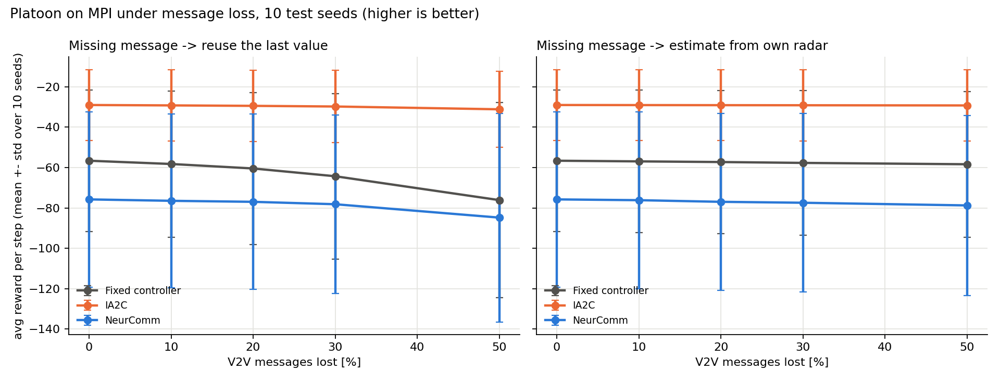
Even with half of all messages lost, nothing crashes. With "last value", fixed goes from −56.6 to −76.1, IA2C from −29.0 to −31.1, NeurComm from −75.8 to −84.8. With the radar estimate all three are almost unchanged. A lost message is followed 0.1 s later by a fresh one, so the damage is small.
Late messages are dangerous
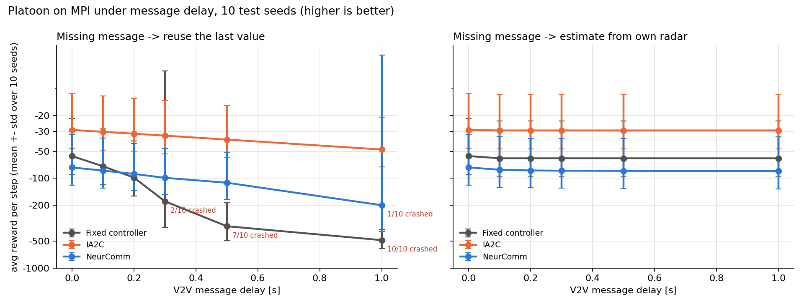
| Delay | Fixed, last value | Fixed, radar | IA2C, last value | IA2C, radar | NeurComm, last value | NeurComm, radar |
|---|---|---|---|---|---|---|
| 0 s | −56.6 | −56.6 | −29.0 | −29.0 | −75.8 | −75.8 |
| 0.3 s | −180.5, 2/10 crash | −60.0 | −33.5 | −29.4 | −98.9 | −82.4 |
| 0.5 s | −341.8, 7/10 crash | −60.0 | −37.1 | −29.4 | −112.1 | −82.8 |
| 1.0 s | −488.4, 10/10 crash | −60.0 | −47.8 | −29.4 | −199.7, 1/10 crash | −83.2 |
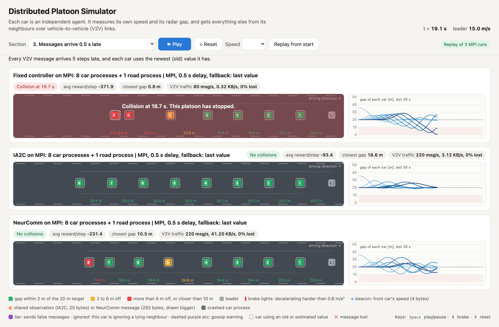
- Delay is much worse than loss. An old value looks like a valid value, so the car acts on wrong information without knowing it.
- Local sensing is the best fallback. Trusting your own radar instead of an old message removes every crash and keeps IA2C at its normal score.
- More communication means more fragility. NeurComm gets 2.6× worse at 1 s delay (IA2C 1.65×) and the radar fallback only helps it partly (−83.2 instead of −75.8). The radar can replace the front car's speed, but nobody can estimate a neighbour's old hidden state.
A crashed car process
Standard MPI aborts the whole job when a process dies, so we model a crash as a process that stays alive but goes silent (crash-stop). The road notices with a timeout, like a simple failure detector, and from then on the crashed car just rolls on at its current speed. In our demo car 4 crashes at 25 s and the leader brakes at 30 s:
| Car 4 crashes at 25 s, leader brakes at 30 s | Fixed | IA2C | NeurComm |
|---|---|---|---|
| Collision at | 37.0 s | 37.9 s | 37.2 s |
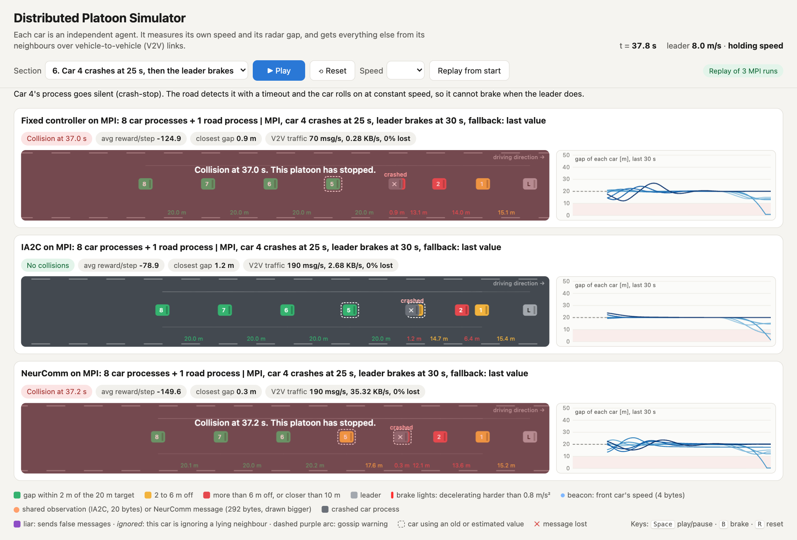
One thing we ran into ourselves: on a busy laptop with a short timeout, a slow process can look like a crashed one. That is the classic false suspicion problem of timeout-based failure detectors. At the start of a run the IA2C cars were declared dead while still loading PyTorch, which we fixed with a startup barrier.
Step 5Training on MPI
Steps 3 and 4 run already trained policies on MPI. A fair question is whether the learning can be distributed too. So we wrote mpi/train_mpi.py: same 9 processes, but now every car process has its own network, its own optimizer and its own memory of what happened, and learns only from what it saw plus what its neighbours sent. The road runs the same train-then-test routine as the original trainer and saves the best checkpoint in the original format, so we score it with the original evaluator.
- Each car alone: the plain version.
- Neighbours average: after every update, neighbours swap their LSTM weights and average them (the consensus idea of Zhang et al. 2018).
One detail needed real coordination. The original code limits the size of each update using the gradients of all 8 networks together (global gradient clipping). With 8 separate processes no one has all gradients, so each car shares the sizes of its gradients (10 numbers) with an MPI Allgather, every car computes the same total and scales its own update by the same factor.
Proof that it computes the same thing
mpi/check_train.py gives the MPI trainer the same starting weights and the same random numbers as the original trainer (the road hands out the random numbers). Over 2,400 steps the test reward after every episode matched to 6 decimals, and the final weights differ by at most 0.00001. That difference starts at 0.00000003 (one rounding step of a 32-bit float, from adding numbers in a different order) and grows slowly with training length, so it is rounding, not a logic difference.
Results
| Training | 12 | 13 | 14 | 15 | 16 | 17 | Median | Beat fixed |
|---|---|---|---|---|---|---|---|---|
| Central (original code) | −37.2 | −94.5 | −374.6 | −70.1 | −431.9 | −34.2 | −82.3 | 3/6 |
| MPI, each car alone | −387.8 | −392.4 | −165.5 | −392.4 | −374.7 | −1099.8 | −390.1 | 0/6 |
| MPI, neighbours average | −373.5 | −387.8 | −392.4 | −422.3 | −1587.3 | −393.7 | −393.1 | 0/6 |
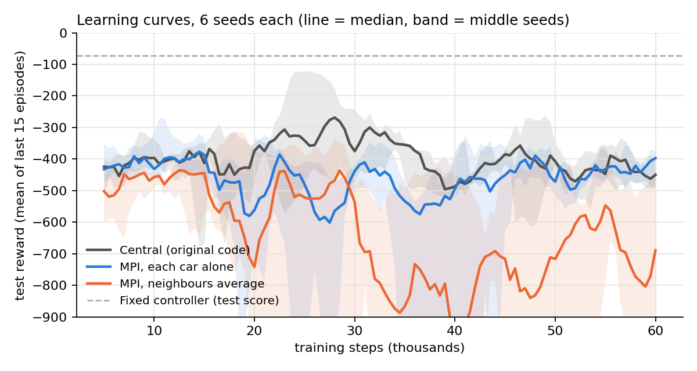
Two honest observations:
- Averaging weights hurt. It also costs a lot: 1.87 GB of weights sent per 60k-step run. Our guess is that cars at different positions in the platoon need different behaviour (our trained IA2C cars each settle on a different setting), and averaging pushes them towards the same one.
- Our MPI runs scored worse than central ones on these seeds, even though the maths is the same. The figure below shows why we think this is mostly luck: when we gave the MPI trainer exactly the same start and random numbers, the two runs stayed identical for 56 episodes, then a rounding difference in the 8th decimal made them drift apart, and the final scores ended up at −70.1 and −392.4. On seed 17 the same experiment ended at exactly the same −34.2. So a single run is close to a lottery ticket. Still, 3/6 vs 0/12 is a big gap, and we would want more seeds before claiming the two are equal in practice.
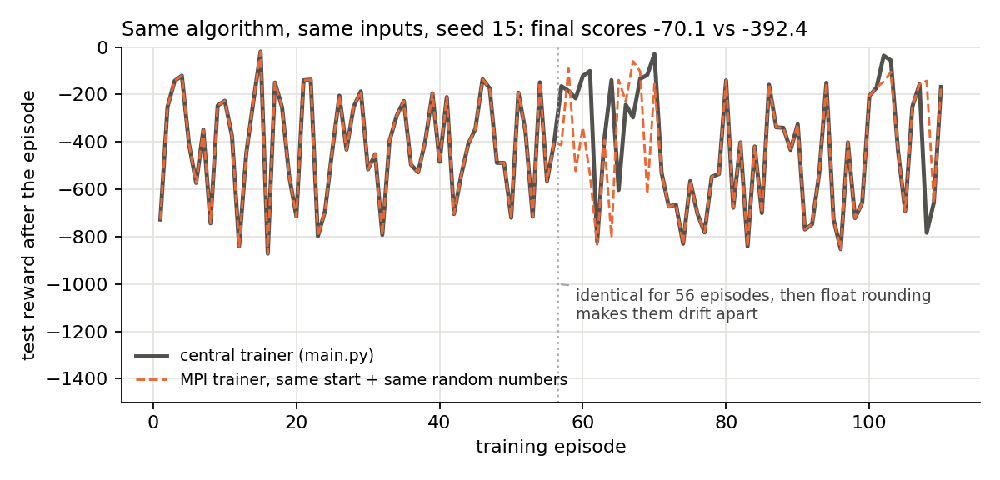
Step 6 · our own ideaA car that lies
Everything in Step 4 is a crash fault: a node stops talking. The harder and more famous class in distributed systems is the Byzantine fault: a node keeps talking but sends wrong information. In a platoon this is also a real security worry, a hacked car sending fake V2V messages. Nothing like this is in the paper, so this is the part we designed ourselves.
The attack
From 25 s on, car 4 keeps driving normally but lies in everything it sends: either a fixed lie ("I am 10 m/s faster than I am") or random values (random speed, random observation and, for NeurComm, a random hidden state and a random last decision). At 30 s the leader brakes. The cars around car 4 believe it.
Defence 1: check messages against your own sensor
A car cannot measure its front car's speed directly, but its radar measures the gap, and if the gap is shrinking the front car must be slower. So each car compares the claimed speed with the speed its radar implies and ignores the message if they differ by more than 2 m/s, using the radar estimate instead. It is the same radar estimate as the fallback from Step 4, used now as a lie detector.
Defence 2: gossip around the liar
The check has a blind spot: only the car behind the liar can check it, because radar looks forward. Car 3, in front of car 4, still receives car 4's lies. And the normal one-hop path from car 5 to car 3 goes through the liar, who could just drop the warning. So:
- After 3 rejected messages in a row, car 5 marks car 4 as a liar and warns car 3 directly over a 2-hop link, around the liar (real V2V radios reach further than one car).
- Witness rule: car 3 only believes an accusation about car 4 if it comes from car 5, the one car whose radar can actually check car 4. Otherwise a liar could get honest cars ignored just by accusing them.
- From then on cars 3 and 5 ignore everything car 4 sends.
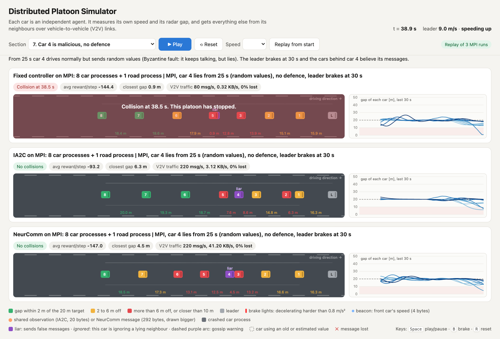
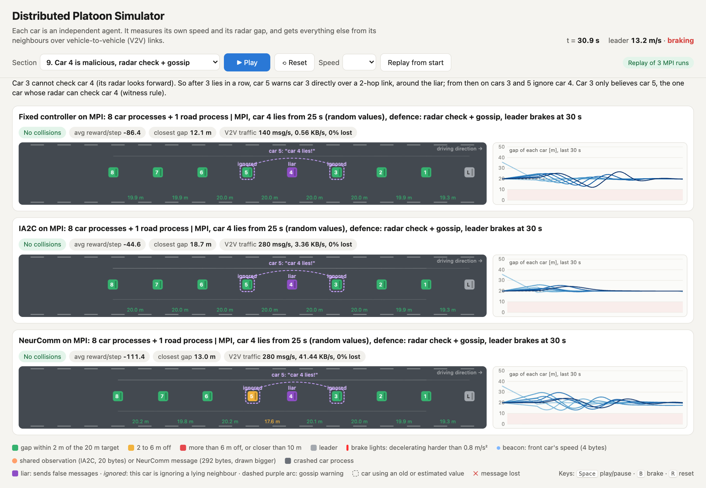
Results on 10 roads
Car 4 lies from 25 s and the leader brakes at 30 s in every run, so even "nothing false" is a hard road (the brake alone costs a lot of reward).
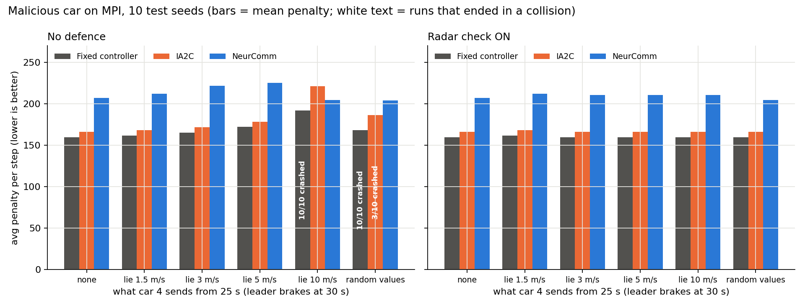
| What car 4 sends | Fixed | IA2C | NeurComm | Lies caught by the check |
|---|---|---|---|---|
| nothing false | −159.8 | −166.1 | −207.2 | 0 false alarms in 30 runs |
| +1.5 m/s | −161.9 | −168.1 | −212.3 | 0% (under the 2 m/s limit) |
| +5 m/s | −172.3 | −178.5 | −225.5 | 100% |
| +10 m/s | 10/10 crash | −221.2 | −204.4 | 100% |
| random values | 10/10 crash | 3/10 crash | −204.1 | 86% |
| any of these, radar check on | 0 crashes | 0 crashes | 0 crashes |
Gossip mostly matters for NeurComm, because its messages also go forward to car 3. On our demo road, with car 4 claiming +10 m/s, NeurComm scores −197.8 with only the radar check and −191.1 with gossip, which is back at its no-liar score (−191.7). For fixed and IA2C the radar check alone was already enough.
- One lying car can crash the whole platoon.
- Trust, but verify with your own sensor. Comparing messages with local measurements stopped every crash, with no false alarms.
- It is a trade-off. Lies smaller than the threshold get through, but they also barely hurt. A stricter threshold would catch more and raise more false alarms.
- Spread suspicion around the faulty node, and only from a witness. That is how the car that cannot check the liar still gets protected.
- Gossip costs bandwidth: one small message per car per step (fixed goes from 80 to 140 messages per second). Sending only when there is news would be cheaper but makes runs harder to reproduce exactly.
- The liar is itself the witness for car 3, so it could falsely accuse car 3. Stopping that needs more witnesses or signed messages.
- NeurComm never crashed from lies, even without a defence, although it suffers most from late messages. We do not fully understand why yet.
Wrap-upWhat we learned
About distributed systems
- A learned multi-agent controller can be split into real processes that only exchange messages, without changing a single number of its behaviour. Checking this step by step (
check_mpi.py,check_train.py) saved us more than once. - In this system communication is a safety feature: without it the platoon crashes in 11 s.
- Late is worse than lost, and the best fallback for missing or old data is the node's own local sensing.
- Crash faults need a detector (timeouts, with their false suspicion problem) and a safe local action; detection alone does not prevent the crash.
- Byzantine faults are harder, but in a physical system local sensors give a way to check what others claim. Gossip with a witness rule spreads that knowledge around the faulty node.
- Even a tiny collective (an Allgather of 10 numbers) can be what keeps distributed training equal to central training.
About RL
- Multi-agent RL results are very seed-sensitive. Rounding differences alone can turn a good run into a bad one, so few-seed comparisons (including ours) should be read carefully.
- More communication is not automatically better: NeurComm sends 13× more data than IA2C, scored worse in our runs and is more fragile to delays.
- Learned controllers are great at the situation they were trained on (IA2C's catch-up is almost perfect) and weaker on surprises like a braking leader, where the simple fixed controller kept the biggest safety gap.
NextWhat is left and future work
- Two laptops. Everything is ready to run the same program across two machines over Wi-Fi (road and cars 1 to 4 on one laptop, cars 5 to 8 on the other), so cars 4 and 5 talk over a real network. We will do this before the final demo.
- Event-triggered messages: send only when something changed enough, with a heartbeat so silence can still be told apart from a crash. Interesting mainly for NeurComm's large messages.
- Stronger Byzantine defence: several witnesses or signed messages, so a liar cannot frame its neighbour.
- Training with faults: train NeurComm with dropped and delayed messages so it learns not to over-trust them.
- Asynchronous steps: right now all processes move in lockstep each 0.1 s; real cars would not.
AppendixHow to run everything
python3 -m venv .venv && .venv/bin/pip install -r demo/requirements.txt mpi4py
brew install open-mpi
# 9 processes: the road + 8 cars (controllers: radar, fixed, ia2c, neurcomm)
mpirun --oversubscribe -np 9 .venv/bin/python mpi/platoon_mpi.py --controller neurcomm
mpirun --oversubscribe -np 9 .venv/bin/python mpi/platoon_mpi.py --controller fixed --delay 5 --fallback radar
mpirun --oversubscribe -np 9 .venv/bin/python mpi/platoon_mpi.py --controller fixed --brake-at 30 \
--byzantine-car 4 --byzantine-at 25 --attack noise --defense --gossip
.venv/bin/python mpi/check_mpi.py # MPI = Python at every step
.venv/bin/python mpi/check_train.py # MPI training = original training
.venv/bin/python mpi/experiments.py --test-seeds 10 # loss and delay sweeps
.venv/bin/python mpi/experiments.py --byzantine 10 # malicious car sweep
# the demo page with all 9 sections
.venv/bin/python mpi/make_demo_sections.py
.venv/bin/python -m simulator.server --port 8767 --open --sections mpi/demo_sections.json
References
- T. Chu, S. Chinchali, S. Katti. Multi-agent Reinforcement Learning for Networked System Control. ICLR 2020. Code: github.com/cts198859/deeprl_network.
- K. Zhang, Z. Yang, H. Liu, T. Zhang, T. Basar. Fully Decentralized Multi-Agent Reinforcement Learning with Networked Agents. ICML 2018.
- J. Gilmer, S. Schoenholz, P. Riley, O. Vinyals, G. Dahl. Neural Message Passing for Quantum Chemistry. ICML 2017.
- M. Bando, K. Hasebe, A. Nakayama, A. Shibata, Y. Sugiyama. Dynamical model of traffic congestion and numerical simulation. Physical Review E, 1995 (optimal velocity model).
- Message Passing Interface Forum. MPI: A Message-Passing Interface Standard, Version 4.0. 2021.
- L. Dalcin, Y.-L. L. Fang. mpi4py: Status Update After 12 Years of Development. Computing in Science & Engineering, 2021.
- T. D. Chandra, S. Toueg. Unreliable Failure Detectors for Reliable Distributed Systems. Journal of the ACM, 1996.
- L. Lamport, R. Shostak, M. Pease. The Byzantine Generals Problem. ACM TOPLAS, 1982.